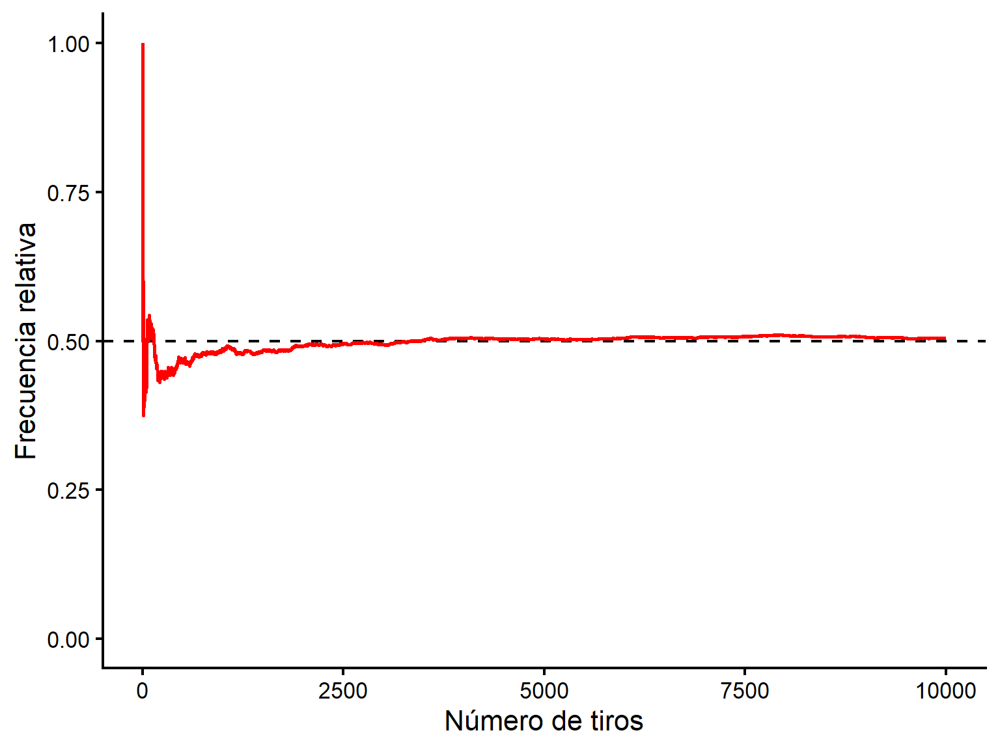

lifeExp gdpPercap
Min. :39.61 Min. : 277.6
1st Qu.:57.16 1st Qu.: 1624.8
Median :71.94 Median : 6124.4
Mean :67.01 Mean :11680.1
3rd Qu.:76.41 3rd Qu.:18008.8
Max. :82.60 Max. :49357.2 Clase 2: Probabilidades y Estadística Inferencial
Nivelación Estadística
Prof. Gabriel Duarte Zúñiga
Universidad Adolfo Ibáñez | DIAPP-2026
4 de junio de 2026
¡Bienvenidas y Bienvenidos a la Clase 2!
🔁 Repaso Clase 1: Estadísticas Descriptivas en R
| Concepto | Definición | Función en R
|
Ejemplo de uso |
|---|---|---|---|
| Media | Promedio aritmético: suma de los valores dividida por \(n\) | mean(x, na.rm = T) |
mean(gapminder$lifeExp, na.rm = T) |
| Mediana | Valor central de los datos ordenados; más robusta ante outliers | median(x, na.rm = T) |
median(gapminder$lifeExp, na.rm = T) |
| Desv. Estándar | Distancia típica de cada observación respecto a la media | sd(x, na.rm = T) |
sd(gapminder$lifeExp, na.rm = T) |
| Percentil | Valor bajo el cual cae el \(p\)% de los datos | quantile(x, probs = p) |
quantile(gapminder$lifeExp, probs = c(.25, .75)) |
| Puntaje Z | N° de desviaciones estándar que separan una observación de la media | (x - mean(x)) / sd(x) |
(200 - mean(bdims$hgt)) / sd(bdims$hgt) |
| Correlación | Fuerza y dirección de la asociación lineal entre dos variables cuantitativas (\(-1\) a \(+1\)) |
cor(x, y) geom_point()
|
cor(gapminder$gdpPercap, gapminder$lifeExp) |
🔁 Repaso Clase 1: Estadísticas Descriptivas en R
Para obtenerlas todas de una vez: summary()
Introducción a la Probabilidad
Probabilidad
El término probabilidad se refiere al estudio del azar y la incertidumbre en cualquier situación en la que diferentes sucesos pueden ocurrir.
Definición frecuentista: La probabilidad de un resultado está definida por la proporción de veces que ese resultado es observado a través de un alto número de repeticiones de procesos aleatorios:
\[Probabilidad = \frac{\#Eventos\ Favorables}{\#Eventos\ Totales}\]
Estadística (Agresti 2018)
En una muestra o experimento aleatorio, la probabilidad de que una observación tenga un resultado particular es la proporción de veces que ese resultado ocurriría en una secuencia muy larga de observaciones similares.
- Dado que definimos probabilidad como una proporción, es un número entre 0 y 1 (o 0 y 100 si se expresan en %)
- Otro aspecto relevante a destacar que las probabilidades se interpretan bajo un contexto de largo plazo. Por ejemplo, si un meteorólogo dice que la probabilidad de lluvia hoy es del 70%, esto significa que en una larga serie de días con condiciones atmosféricas como las de hoy, llueve el 70% de los días.
Proceso Aleatorio
En un proceso aleatorio hay más de una posibilidad de resultado y la predicción de algún resultado está sujeto a variabilidad:
-
Clásicos ejemplos:
- Tirar una moneda.
- Tirar un dado.
Se puede pensar como un proceso donde el resultado es probabilístico (o estocástico) y no determinístico. Es decir, hay incertidumbre en el resultado.
Espacio Muestral
- Es el conjunto de todos los posibles resultados de un proceso aleatorio. Se denota con el símbolo \(S\)
- Dados: \(S=\{1,2,3,4,5,6\}\).
- Moneda: \(S=\{C,S\}\).
Evento
Un evento un subconjunto del espacio muestral.
Para el caso del dado, digamos que:
\(A\) representa el evento de que al tirar un dado el resultado sea un número par: \(A=\{2,4,6\}\).
\(B\) representa el evento de que al tirar un dado el resultado sea un número impar: \(B=\{1,3,5\}\).
\(C\) representa el evento de que al tirar un dado el resultado sea un número primo: \(C=\{2,3,5\}\).
Reglas Básicas de Probabilidad
- \(0 \leq P(A) \leq 1\): La probabilidad de cualquier evento se encuentra entre cero y uno.
- La probabilidad de un evento nulo es igual 0 (\(P(\phi) = 0\)).
- \(P(S)=1\): El conjunto de todos los eventos posibles es igual a 1.
- Probabilidad de eventos complementarios: \(P(A)+P(A^c)=1\). Por ejemplo, si sabemos que la probabilidad de que llueva es 0.1, entonces sabemos también que la probabilidad de que no llueva es 0.9.
- Regla de Independencia y Multiplicación: Dos procesos son independientes si el saber el resultado de uno no afecta el resultado de otro. Por ejemplo, tirar dos monedas al aire. Si el evento \(A\) y \(B\) son independientes, entonces: \(P(A \cap B)=P(A) \times P(B)\).
- La probabilidad de sacar dos caras en dos lanzamientos de una misma moneda es: \(\frac{1}{2} \times \frac{1}{2}=\frac{1}{4}\).
Diagrama de Venn
- Un diagrama de Venn usa círculos que se superponen para ilustrar las relaciones lógicas entre dos o más conjuntos de elementos. Consideremos el siguiente diagrama de Venn:

Complemento de un Evento
Definición: El complemento de un evento son todos los resultados en el espacio muestral que no corresponden al evento mismo.
Ejemplo: el complemento del evento \(C\) es el conjunto de resultados de tirar un dado que no corresponden a números primos.
Notación: \(\Large C^c\).
\(\Large C^c:\{1,4,6\}\).

Complemento de un Evento
- Definamos los tres conjuntos anteriores a partir de vectores en R: \(A\), \(B\), \(C\).
- Definamos un vector que contenga los elementos de \(A\) y \(B\): Para ello, utilizamos la función
union().
- Ver que elementos que están en \(A\) o \(B\), no están en \(C\): Para ello, utilizamos la función
setdiff().
Eventos Mutuamente Excluyentes
Definición: Los eventos mutuamente excluyentes son eventos que no pueden ocurrir al mismo tiempo.
Ejemplo: El evento \(A\) y el evento \(B\) son mutuamente excluyentes porque el resultado de tirar un dado no puede ser par e impar al mismo tiempo.
Los eventos \(A\) y \(C\) no son mutuamente excluyentes solamente porque 2 es tanto par como primo.
Eventos Mutuamente Excluyentes
- ¿Existe al menos un elemento de \(A\) igual a un elemento en \(C\)?: Para ello, utilizamos la función
intersect().
\(A\) y \(C\) no son mutuamente excluyentes
¿Existe al menos un elemento de \(B\) igual a un elemento en \(C\)?
\(B\) y \(C\) no son mutuamente excluyentes
¿Existe al menos un elemento de \(A\) igual a un elemento en \(B\)?
- \(A\) y \(B\) sí son mutuamente excluyentes
Notación de Conjuntos
| Descripción | Notación | Lectura | Elementos |
|---|---|---|---|
| Unión | \(A \cup C\) | A o C | \(\{2,3,4,5,6\}\) |
| Intersección | \(A \cap C\) | A y C | \(\{2\}\) |
Resumen Probabilidad I
Conceptos Importantes (devore2016?)
- Un proceso aleatorio (en libros de estadística, llamado también experimento) es cualquier acción o proceso cuyo resultado está sujeto a la incertidumbre.
- El espacio muestral de un experimento, denotado por \(S\), es el conjunto de todos los posibles resultados de dicho experimento.
- Un evento es cualquier recopilación (subconjunto) de resultados contenidos en el espacio muestral \(S\).
- Sea que \(\phi\) denote el evento nulo (el evento sin resultados). Cuando \(A \cap B = \phi\), se dice que A y B son eventos mutuamente excluyentes o disjuntos.
- El complemento de un evento \(A\), denotado por \(A'\), es el conjunto de todos los resultados en S que no están contenidos en A.
- La unión de dos eventos \(A\) y \(B\), denotados por \(A \cup B\) y leída como A o B, es el evento que consiste en todos los resultados que están en A o en B o en ambos eventos, es decir, todos los resultados en al menos uno de los eventos: \(P(A \cup B) = P(A) + P(B) - P(A \cap B)\). También \(A \cup B\) se puede descomponer en dos eventos excluyentes: \(A\) y \(B \cap A'\); la última es la parte de \(B\) que queda afuera de \(A\), por lo que \(P(A \cup B) = P(A) + P(B \cap A')\).
- La intersección de dos eventos \(A\) y \(B\), denotada por \(A \cap B\) y leída como A y B, es el evento que consiste en todos los resultados que están tanto en A como en B.
Resumen Probabilidad I

Aplicando los Conceptos
- Asumamos que repetimos el proceso aleatorio de tirar una moneda y que registramos como evento \(X\) el número de veces que sale cara en \(n\) lanzamientos de moneda. Entonces:
\[\Large P(Cara)=\lim_{n\to\infty}\frac{X}{n}\]
\[\Large P(Cara)=\frac{1}{2}\]
Lanzar 1 Vez una Moneda
- Definamos un vector moneda con los posibles eventos y simulemos un solo lanzamiento de esa moneda.
- Para hacerlo en R, debemos utilizar la función
sample()considerando los siguientes argumentos:-
x: Un vector de uno o más elementos entre los cuales elegir, o un número entero positivo. -
size: Un número entero no negativo que indica el número de elementos a elegir. -
replace: Un valor lógico que indica si es que el muestreo debe ser con reposición (= T) o no (= F).
-
- Además, seteamos una semilla con la función
set.seed()para proceso definir un proceso pseudo-aleatorio que nos permita replicar los mismos resultados. En la medida que se utilice la misma semilla, todos los procesos aleatorios que se hagan en adelante serán replicables siempre y cuando utilicen la misma semilla (en la práctica, cualquier número natural).
Repitamos 5 Veces Este Proceso
- Dados estos resultados, vemos que \(P(Cara)=\frac{3}{5}=60\%\)
Repitamos 5.000 Veces Este Proceso
- En este caso vemos que \(P(Cara)=\frac{2497}{5000}=49,94\%\)
Obtengamos la Frecuencia Relativa Acumulada de 10.000 repeticiones

Probabilidades de una distribución normal
¿Qué representa el Puntaje Z (Z-Score)?
Significancia estadística V/S significancia práctica
Las pruebas de significancia son menos útiles que los
intervalos de confianza
Cierre
Bibliografía
Agresti, Alan. 2018. Statistical methods for the social sciences. Fifth edition, global edition. Harlow: Pearson Education, Limited.